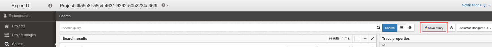
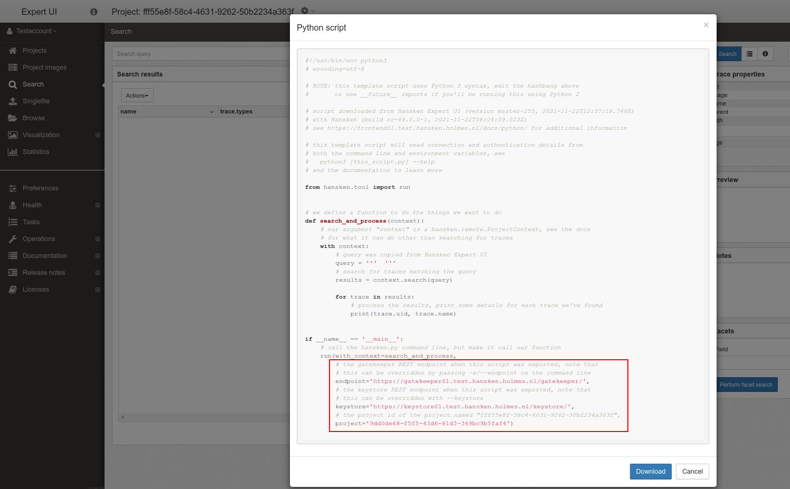

Run plugins with Hansken.py
Hansken.py is a Python client to Hansken’s REST API, developed and maintained by the Netherlands Forensic Institute.
With Hansken.py, you can run your Python plugin on a project on your Hansken installation that has already been extracted. This way of running your plugin is useful during your plugin development. It is not required to upload your plugin to Hansken and start an extraction, making the development cycle faster. However, please note that this is only useful during the development stage of your plugin, as the execution of your plugin will be much slower compared to running the plugin during a Hansken extraction.
Note
The execution of your plugin will be much slower in Hansken.py compared to running the plugin during a Hansken extraction.
How to run python extraction plugins standalone with Hansken.py
Running python extraction plugins standalone with Hansken.py is easy. It is just one command. This section explains how to setup this command for your specific environment.
Create a runner file
Create a file run_with_hansken.py in the root folder of your plugin. This will aid you in running the plugin with
hansken.py.
from hansken_extraction_plugin.runtime.extraction_plugin_runner import run_with_hanskenpy
from plugin.my_plugin import MyPlugin
if __name__ == '__main__':
run_with_hanskenpy(MyPlugin)
Preparing for the command
Before you can enter the command that runs your extraction plugin with Hansken.py, you need to find three values:
HANSKEN_PROJECT_IDproject id on which you want to run your pluginYOUR_GATEKEEPER_URLthe URL to the Hansken gatekeeperYOUR_KEYSTORE_URLthe URL to your keystore
The correct values of these variables can be found in the Expert UI. Go to the search-page of your project in the ExpertUI. Next to the search-bar hit the button “Save query”.
{kind=link}
A new dialog shows up. At the bottom of this dialog, you will find your gatekeeper and keystore urls as well as the project id.
{kind=link}
Running your plugin with Hansken.py
Next, open a terminal in the project root folder of your plugin and enter the following command. It will run your extraction plugin with Hansken.py in Hansken. Replace the three variables with their respective values.
python3 ./run_with_hanskenpy.py -v -l - HANSKEN_PROJECT_ID --endpoint YOUR_GATEKEEPER_URL --keystore YOUR_KEYSTORE_URL
If your command runs well, you might be prompted for your username and password. There will be some output (note that the output may vary depending on your system setup and project content):
[2021-03-16 12:59:45.344248+0000] INFO: hansken.auth: selected IDP ID (...) with SOAP endpoint (...)
[2021-03-16 12:59:45.344450+0000] WARNING: hansken.auth: IDP url known, user+pass auth required but no username supplied
username []: testaccount
[2021-03-16 12:59:48.423245+0000] INFO: hansken.auth: user acknowledged environment username or supplied custom username: testaccount
password for user testaccount:
[2021-03-16 12:59:53.799668+0000] INFO: hansken.auth: identity provider url and user+pass provided or known, using Keycloak SAML with Basic auth
[2021-03-16 12:59:53.805538+0000] INFO: hansken_extraction_plugin.runtime.extraction_plugin_runner: PluginRunner is running plugin class Plugin
[2021-03-16 12:59:53.859299+0000] INFO: hansken.auth: posting SAML request with authorization for user testaccount to IDP endpoint (...)
[2021-03-16 12:59:54.240290+0000] INFO: plugin.extraction_plugin: processing trace 54197e67-8135-40c3-93f1-3d73a5552693
[2021-03-16 12:59:54.240753+0000] INFO: plugin.extraction_plugin: processing trace OCRimage
[2021-03-16 12:59:54.240753+0000] INFO: plugin.extraction_plugin: processing trace (...)
Note that the arguments -v and -l - are passed to enable logging. To find out what other options can be passed to
this command, please have a look at the hansken.py documentation, or simply run the following command:
python3 ./run_with_hanskenpy.py --help
Compatibility
At this moment, running Extraction Plugins with Hansken.py has a few limitations. These are:
When writing an Extraction Plugin for use with Hansken.py, the matcher must contain exactly one “$data.property = value” expression.
Data transformations are currently not supported by Hansken.py.
Tracelets are not yet supported by the SDK in use with Hansken.py.